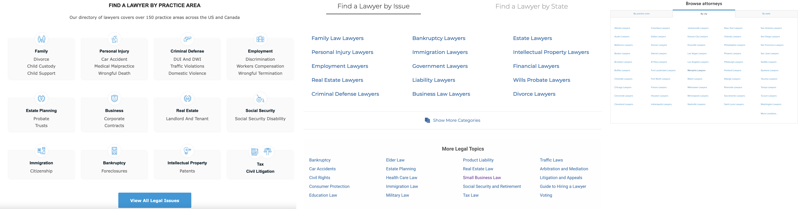

Being a new member in the team, I had no experience with the existing website. Therefore, I began by identifying the target users and key problems in the current website with fresh eyes and doing a UX audit to uncover pain points and opportunities for improvement in the site's live experience.
Target audiences : clients / lawyer
Expected Mood Statement
- Clients feel professional and trust when interact with the website
- Clients feel confident to get legal support and quick feedback from the website
- Lawyers are excited to join this community
Current Site Analysis
- The company's mission was not adequately communicated on the website.
- The content lack organization.
- There was no proper CTA button on the website. It feels more like an informative website.
- There was no trust building up when the user first land on the website.
- The company’s advantages are not visible on website.
- Conversion rates are low for both client and lawyer sign up flow
- Not able to figure out how it works, for new time visitors.
Competitive Analysis
To gain inspiration for new website redesign, I conducted a competitor analysis. I started with looking at other lawyer finder websites including Avvo, lawyers, findlaw, and LegalMatch.
1. One common feature we identified across these websites was the placement of the lawyer search bar in the middle of the page in order to get users attention and emphasize it as the main call to action. On 3/4 websites, Lawyers can be searched by both legal issues and lawyer name. This was an important design pattern to consider in order to make it easier and more efficient for users to search for their lawyers.
2. All the websites prominently displayed their mission statement at the beginning of their homepage. This was an important method to effectively communicate each company’s mission to the user and help them better understand what each organization does.
Common design pattern 1: Search bar on landing page
Common design pattern 2: MISSION STATEMENT
3. Another common design pattern I observed was that users are able to sort lawyers by choosing specific practice areas/Locations state. Websites provide all the options in the forms of links or cards in order to make users have a second way to get lawyers

Common design pattern 3: display all issue/state options via links/cards
4. On the nav bar, I noticed that there are links for lawyers and doctors to register on website. Using the phrases "Grow your practice" and "List your practice on Zocdoc" instead of a single word can encourage lawyers and doctors to participate.
Common design pattern 4: highlight phases in navigation bar to encourage doctors/lawyers to join the platform